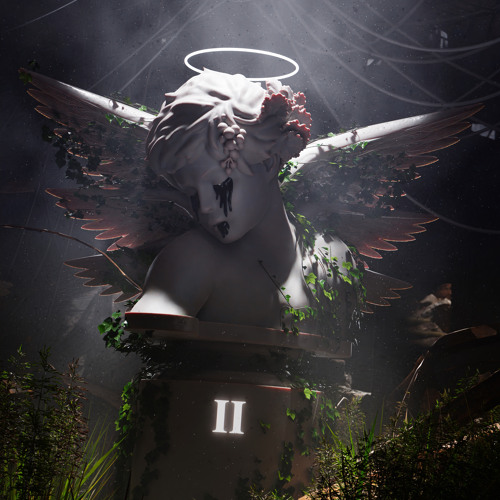
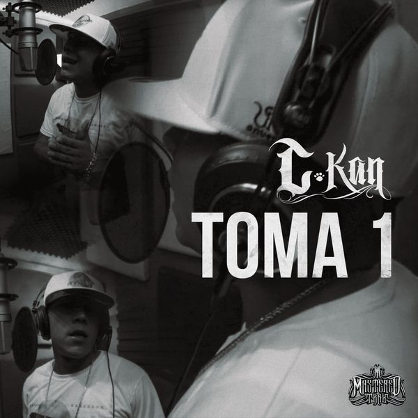
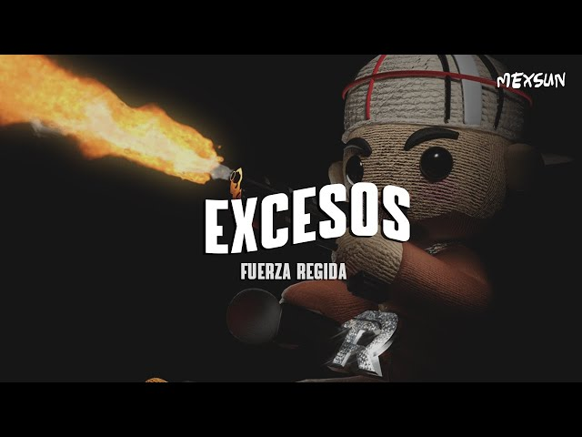

TOP 10
REGRESAR
TU NAME - FUERZA REGIDA
Ya no te topo, ya vete a la fregada Me fui con camaradas, agarré otro culo como tú pero mejor Mejor me las daba y hasta mejor gritaba Nos fuimos de shopping y le compré todo lo que nunca te compré Y ya no te busco, se me quitó la maña Me fui con la Briana, Juliana y la Tania, y con la que nada que ver Party, party La shorty dice "Daddy, daddy" No te conozco, mami, mami Se me olvidó tu name Party, party La shorty dice "Daddy, daddy" No te conozco, mami, mami Se me olvidó tu name Todo por un cuerno, y ahora te la pelas Ya no eres la dueña y ahora por pendeja todo se te fue, bebé Yo sigo en mi cuento con pura' princesas Nunca tuve prisa, la vida de artista y pa' las fresas, príncipe Party, party La shorty dice "Daddy, daddy" No te conozco, mami, mami Se me olvidó tu name Party, party La shorty dice "Daddy, daddy" No te conozco, mami, mami Se me olvidó tu name Cha, cha, cha, cha, cha, cha, cha, ey Fuerza Regida Party, party La shorty dice "Daddy, daddy" No te conozco, mami, mami Se me olvidó tu name
MONEY EDITION - EDEN MUÑOS, FUERZA REGIDA
Perdón, 'amá, si le fallé, ando persiguiendo el sueño Acuérdese que me dijo que si hay miedo no hay dinero Aguardiente y un cubano, tres veces tocando el piso Pues para hacer y deshacer a Eleguá pido permiso Mire, 'amá, qué cabrón le salí Pa' que me la pelen los que dudaron de mí Últimamente sobran las fresas, pura princesa hay en la mesa Traigo una corta que cuando truena nunca es para saludar Y es todo o nada, siempre lo he dicho Ser un cabrón sin perder el piso La buena vida traigo de oficio Soy money edition Y pura Fuerza Regida, compa Eden Puro pa' adelante, compa Jesus ¡Otro Pedo! Mire, 'amá, qué cabrón le salí Pa' que me la pelen los que dudaron de mí Últimamente sobran las fresas, pura princesa hay en la mesa Traigo una corta que cuando truena nunca es para saludar Y es todo o nada, siempre lo he dicho Ser un cabrón sin perder el piso La buena vida traigo de oficio
MUELLE DE SAN BLAS - MANA
Uh-uh-uh-uh, uh-uh Ella despidió a su amor El partió en un barco en el muelle de San Blas El juró que volvería Y empapada en llanto, ella juró que esperaría Miles de lunas pasaron Y siempre ella estaba en el muelle, esperando Muchas tardes se anidaron Se anidaron en su pelo y en sus labios Uh-uh-uh-uh, uh-uh Uh-uh-uh-uh, uh-uh Llevaba el mismo vestido Y por si él volviera, no se fuera a equivocar Los cangrejos le mordían Su ropaje, su tristeza y su ilusión Y el tiempo se escurrió Y sus ojos se le llenaron de amaneceres Y del mar se enamoró Y su cuerpo se enraizó en el muelle , sola en el olvido (Sola), sola con su espíritu (Sola), sola con su amor el mar (Sola), en el muelle de San Blas Su cabello se blanqueó Pero ningún barco a su amor le devolvía Y en el pueblo le decían Le decían la loca del muelle de San Blas Y una tarde de abril La intentaron trasladar al manicomio Nadie la pudo arrancar Y del mar nunca jamás la separaron , sola en el olvido (Sola), sola con su espíritu (Sola), sola con su amor el mar (Sola), en el muelle de San Blas , sola en el olvido (Sola), sola con su espíritu (Sola), sola con el sol y el mar (Sola), ¡Oh, sola! Sola en el olvido (Sola), sola con su espíritu (Sola), sola con su amor el mar (Sola), en el muelle de San Blas Se quedó Se quedó sola, sola Se quedó Se quedó con el sol y con el mar Se quedó ahí Se quedó hasta el fin Se quedó ahí Se quedó en el muelle de San Blas Uoh, oh-oh-oh Sola, sola se quedó Uoh, oh-oh-oh

MIENTELE - JUNIOR H
Buscando una razón, la encontré No te bastó avisarme, y pregunté Lo que me decía la gente Será por mi suerte o no lo sé Me trae bien loco la champán rosé Me duele el alma, lo que es Miénteme de nuevo, miéntete a ti misma Miéntele a tus ciegos, con ese carisma Miéntele Y úsalo como tú sabes la mente jugar Ay, diviértete Que al fin y sola te vas a quedar Sola y no más Me pagaste mal, no sé por qué Si contigo siempre me la rifé Sobraba amor y lo gasté Por si pensabas querer volver Yo creo, conmigo no se va poder Hasta a él mismo, finges querer Miénteme de nuevo, miéntete a ti misma Miéntele a tus ciegos, con ese carisma Miéntele Y úsalo como tú sabes, la mente jugar Ay, diviértete Que al fin y sola te vas a quedar Sola y no más
EL 24 - TIGRILLO PALMA
Vengase pa' aca plebes, vengase pa aca viejo Arránquese con el corrido del 24 compa Roberto, fierro Me dicen El 24 entre la gente importante Mis amigos y parientes también me llaman Tecate Yo soy nacido en La Sierra, en el pueblo de la S Y en el negocio donde ando se anda rifando la muerte Que vengan ya los norteños a cantarme mis corridos Traigan perico y cervezas, también botellas de vino Y aquí nos las acabamos mi compa Juanito Pero con Banda Siempre he sido responsable, por eso tengo un lugar Y cuando se me ha ofrecido me la he sabido jugar Traigo plebada a mi mando, pero también tengo jefe a quien yo Respeto mucho porque es un hombre valiente Los numeros andan fuertes por todos es bien sabido Las cosas se ponen bien porque somos muy unidos Hasta El Rosario, Sinaloa, compa Javierin

TOMA 1 - C-KAN
Ajá, ajá Hoy nomás ese cumbión Tírala desde ahí La vo' a tirar sin ponchar Puros punchline Maxo no nos alcanzan Estamos inalcanzables Hablen lo que hablen Ya traigo pelado el sable, ah Primero hablan mal de mí, después escuchan mis canciones ¿Ves? Hasta mis haters me traicionan Que Dios me perdone pero yo no los perdono La pobreza nos dejó en el abandono Salió el sol y esas estrellas no brillan Me voy a defender, no a poner la otra mejilla Yo les mentiría si les digo que he mentido Cuando he rimado de las cosas que he vivido A estas alturas el dinero ya no me impresiona Sueño que un día esté de moda ser buena persona Maricas que hoy se graban tiraderas con mi nombre Qué bueno, les sigo matando el hambre Conozco de esos payasos y sus disfraces Me pongo pa' que me cacen y nada hacen Si me van a matar disparen, no me amenacen Que no cuenta lo que se dice, es lo que se hace, ah Ajá, ajá, ajá, ajá Una sola vida pa' vivir Lapicera pa' escribir Rólate otro pa' volar Total, vamos a morir Virgencita de Guadalupe Pídale a Gauchito Gil Que por favor me cuide a mí Por que yo sí que I keep it real Ahí te va el dos Cualquier pendejo rima, cualquier pendejo rapea Cualquier pendejo inventa mentiras que se las crean Cualquier pendejo quiere respeto pero oiga, viejo Lo que he hecho yo no lo hace cualquier pendejo Uf, soy el diablo amigo de Jesús Arma otro de kush, luego hágase la luz Hoy critican porque tienen dedos, saben escribir La vida era un beat, yo la convertí en un hit Dejé las drogas, dije drogas, no la marihuana Yo me comí a Eva, Adán a la manzana Amigo no son mis amigos solo porque amigos un día dicen ser mis amigos Déjame te digo, mi amigo, que entre tus amigos se esconde tu peor enemigo Digo, una vida de testigo Sigo, solo Dios puede conmigo Y no, conozco a otro que tenga carrera después de que pueda medirse conmigo No me quite el tiempo que no tengo mucho Yo ya fui y vine por el sueño de muchos Te lo juro que si agarro la libreta los apago Lo pienso pero no lo hago Que si suelto mis líricas en las hojas me los cago, ja Lo pienso pero no lo hago He competido con varios Y todavía sigo siendo yo mi mejor adversario Mastered Trax C-Kan Aaugh Cha, cha, chau
LA PISTA SECRETA - LOS TUCANES DE TIJUANA
Sacó una bolsa de polvo Y se dio tres, muy aprisa Le subió tiro a su escuadra Y se fajó la camisa Les dijo a sus compañeros: "Hay problemas en la pista" Procedente de Colombia Una avioneta llegaba A la sierra sinaloense Donde iba a ser descargada Pero la pista secreta La judicial encontraba Ya la estaban descargando Cuando se oyó una sirena Los narcos se reportaron: "Jefe, tenemos problemas" El jefe dice: "hagan frente" "Voy para allá, no se muevan" Empezaron los disparos Al llegar la judicial Cayeron dos traficantes Quedaban cuatro nomás Pero cuando llegó el jefe No quedó ni un federal ¡Échale, primo! "Señor, aquí está la carga" Dijeron los colombianos Entréguenos el dinero Porque ya nos retiramos Pues, que tengan un buen viaje Y al infierno los mandaron Ninguno era judicial Eran puros bajadores Se disfrazaron de leyes Como en varias ocasiones Junto con los colombianos Hacían sus operaciones El hombre se carcajeaba Y besaba los paquetes Qué mansito me agarraron No saben con quién se meten Si no es por el pericazo No hubiera salvado el flete De los corridos clásicos de los Tucanes Eso es todo, ¿están contentos? ¡Eso es todo, primo! Gracias, mexicanos, centroamericanos, sudamericanos Okay, vamos a enviarle por acá, en inglés, que dice "The White Eagle", en español "El Águila Blanca", ¡viene zurdo!
DESDE CUANDO - CARTEL DE SANTA
Desde cuándo que me andan amenazando Que me quitarán la vida pero yo sigo cantando Desde changos hace tiempo que me tiran Para ver si alguien los mira pero se quedan mirando Desde cuándo la vida me andan quitando Yo cantando por donde ando Matándolos como Rambo Tú cagandote pa'dentro Viviendo de puros cuentos Yo llenando los conciertos Contando los de a quinientos Y lo que es nomás Al chile nomás lo que es Sin hablar de más Y sin elevar los pies Rata que me espanta lo que canta Soy de Santa y acá en Santa 'tamos curados de espanto Por lo tanto y mientras tanto hasta el momento Estoy completo y por supuesto que demuestro que eres falso No ando herido, no he corrido ni rapeando me han vencido No venden como he vendido, no sé porque tan crecidos Algunos se sienten importantes si los dejas columpiarse Algunos no tuvieran carrera si por el cártel no fuera Si vieran la manera en la que esperan pa' después voltear bandera Bueno fuera que tuvieras par de huevos pa' mirarme Pero te falta cara y eso que eres doble cara Y andas muy Agustín Lara mientras yo miro probable Que pa' ti depare lo mismo que a tu compadre Por hablarle a federales de mis jales Desde cuando la vida me andan quitando Yo cantando por donde ando Matándolos como rambo Tú cagandote pa'dentro Viviendo de puros cuentos Yo llenando los conciertos Contando los de a quinientos Y lo que es nomás Al chile nomás lo que es Sin hablar de más Y sin elevar los pies Papá gallo, te quedó grande el caballo Me dijiste yo no fallo, que eras un perro de guerra Pobre perra, pues no que eras como el Ferras Según tú puro pa'dela' pero cuando hay pleito vuelas Hay panela que le pelas si sabes que me la pelas que te duela Gominola Eres culo no eres chulo, se te subieron los humos Si no traes pa' tu consumo, ya das pena Te sientes de la realeza con tu corona de princesa Pero tu naturaleza es wannabe, wannabe fresa Le dijeron a tu jefa su hijo está mal de la cabeza Si sigue mamando verga le van a crecer las orejas ¡Chorejón! La ñonga me andas pelando Hoy, mañana y siempre Tú sabes quién trae el mando Papu, papi, papu, papi De risa me estás matando Pinche chorejón
EL VAGO DE LOS NIKE - TITO TORBELLINO JR
Y sí Qué cara salió la vida Ya nadie me puede contar El día que salí del barrio Y también me persigné porque quería progresar Las calles Nunca dieron nada bueno Y en nadie me pude confiar Y en aquel día de tantas pronto me fajé un Glock Y me puse a traficar Y así La ley ya me empezó a buscar Y ahora me traen en la lista y hasta el día de hoy Conmigo no pueden dar Y acá La suerte fui a aprovechar Y me vine para mi tierra y ando peleando el terreno Con todos los Salazar Y ahí le va fuerte el saludo para el Alfredo Y a todos sus arremangados, viejo, ¡no se rajen! Y sí Extraño las avenidas Y los regaños de mi amá Y un pozolito en domingo, con los plebes en la esquina Listo pa'l party tirar También Extraño mucho a un amigo Que no puedo visitar Pero si le llevan flores, ahí le dicen que el Pirata Siempre lo va a recordar Y así El poder empezó a llegar Y ahora cargo varios plebes También ando en las blindadas patrullando la ciudad Y así La plaza empecé a agarrar Y aquel Vago de los Nikes, ya le cambiaron de nombre Y "el Parche" le han de apodar Gente nueva Salazar

EXCESOS - FUERZA REGIDA
Ando como quiero, destapo botellas Tú ya andas con otro, ni modo, qué pena Creí serías la buena, me voy, te dejo huella Sí estás bonita y todo, pero hay más culos que estrellas Me voy pa' la Capi, los plebes me esperan Saben sin mucho verbo si hace lo que quieran Soy adicto a la feria, polvo pa' que amanezca Hoy dejo la tristeza, gastando paquita gruesa Y mientras llega mi persona favorita Seguiré con mi loquera, los excesos, las morritas Mami, yo nunca he tenido prisa Porque ahorita vivo como artista Prendan luces, cámaras y acción Hay bellezas en cada rincón Fuer-za Regida, viejo Como siempre, viejo Por el quemacocos les vuela el pelo a las güeras Son muy sexy, beliconas, con corridos se alebrestan Estas Barbies solo piden fiesta Yo soy el papi que las calienta Mi lenguaje es pura seducción Aunque pa'l amor no sirvo yo Y mientras llega mi persona favorita Seguiré con mi loquera, los excesos, las morritas Mami, yo nunca he tenido prisa Porque ahorita vivo como artista Prendan luces, cámaras y acción Hay bellezas en cada rincón Y hay más culos que estrellas, mija Acuérdense de eso